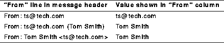

The Folder Contents viewing area is a section within the Main window that displays the list of mail messages, one line per entry, contained in the active mailbox folder. The figure Folder Contents Area illustrates this section of the Main window.
You can control the width, order, and titles of the columns in the Folder Contents viewing area. You can also specify which columns should be displayed. See Message List Option for more information.
A quick and easy way to change the size of columns in the viewing area is to click on a vertical separator bar in the column titles above the viewing area and drag the cursor left or right.
If the list of your messages does not fit completely in the viewing area, horizontal and vertical scroll bars are added as needed. If both scrolls are present you will also see a joystick in the lower right corner. Click the joy stick and drag up, down, left, or right to pan the viewing area.
You can control the order in which messages are displayed in the viewing area via the Sort ... option in the Main window Options menu. (See Sort Option for more information.)
By clicking on options in the Message menu, you can perform various operations on selected mail messages in the Folder Contents viewing area. For example, you can select a message to read, to reply to, to save, to mark for deletion, to print, to copy, and so forth. You can perform these operations on individual selected messages or on multiple selected messages
From the Message menu, you can also launch the Composition window, in order to compose a new message.
In addition, most but not all, of these options can be performed on individual messages (even if they are not selected) by placing the mouse pointer on any message and clicking the right mouse button to open a pop-up menu adjacent to the message.
The Folder Contents area is surrounded by a thin, solid-line box that includes a folder status line. The status line contains the name of the active folder and status information about the contents of the folder. For example:
In Box (62 messages, 22 unread, 1 saved, 7 marked for deletion)
Each column in the Folder Contents window proper, provides a different bit of information about the status of the messages.
Optionally, you can change the width and order of any of the columns and even remove columns from the display. See Message List Option.
Message status information is contained in these status columns:
For example, when a new message arrives, its status is new. When you read it, or save it, or delete it, its status changes to read, or saved, or marked for deletion. If any messages are left with new status when you exit Ishmail, their status changes to unread the next time you start the program.
(See Message Status Icons and Flags for descriptions of the various status icons and status flags.)
The status of an individual message can be set, or reset, explicitly. See Selection and Status Options for details.
You can change the sort order of messages in the list by selecting the Sort ... option in the Options pull-down window, or by editing the appropriate line in your .ishmailrc file. See Ishmail Resources for a description of the resources associated with sorting the messages.
Multiple status indicators may be shown. For example, the flags MSD indicate that the message is a MIME message that has been saved and marked for deletion.
Sender/recipient information is extracted from the
From
line in the mail message header. If this header entry
contains text surrounded by parenthesis, the application
displays that text in the column. Otherwise, the full
address string to the right of
From: is displayed in the
column. For example:
If you display your outgoing message folder, the addresses or aliases of the message recipients are displayed.
day,
date,
time,
time zone.
NOTES: